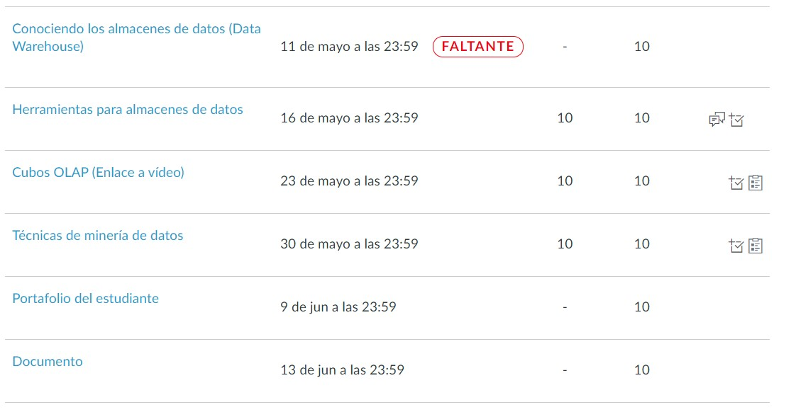
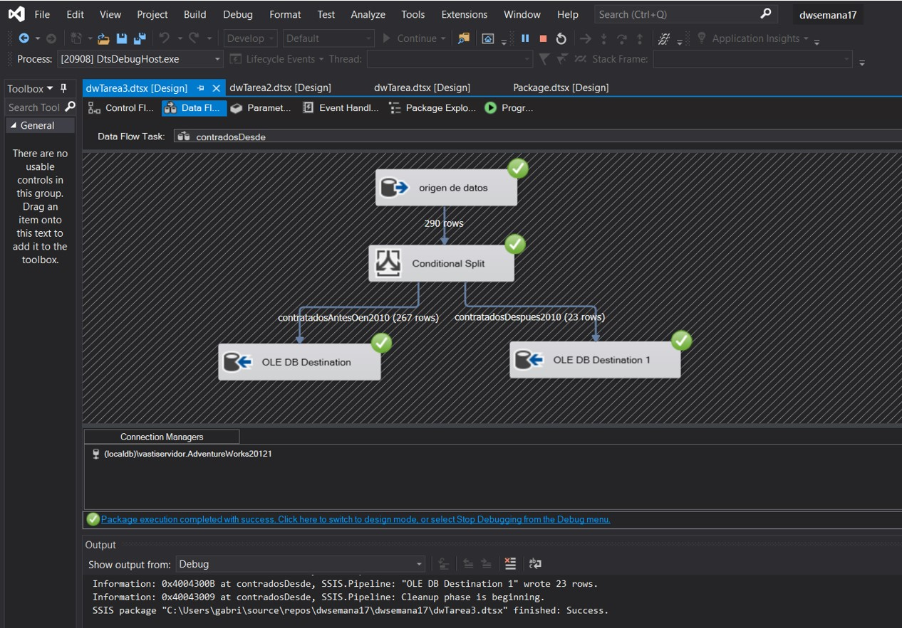

UNIDAD III
ALMACENES DE DATOS Y MINERIA DE DATOS
El tema central que estuvimos estudiando fue algo totalmente nuevo para mí, desconocía de las grandes cosas que se pueden hacer
mediante la minería de datos para poder tomar decisiones en empresas que manejan grandes volumenes de datos.
Aprendimos que los almacenes de datos o datawarehouse(DW) son un tipo de sistema de gestión de datos que está diseñado para habilitar y respaldar
las actividades de inteligencia empresarial (BI), especialmente las analíticas. Además que los almacenes de datos están
destinados únicamente a realizar consultas y análisis y a menudo, y que estos contienen grandes cantidades de datos históricos que
pueden provenir de diferentes fuentes.
También tuvimos la oportunidad de realizar prácticas pequeñas sobre un tipo de integración de datos que es ETL, el cual nos permite
extraer, transformar y cargar la data, este se utiliza para mezclar datos de múltiples fuentes. Y que se utiliza a menudo para
construir un almacén de datos. Durante este proceso, los datos se toman (extraen) de un sistema de origen, se convierten (transforman)
en un formato que se puede almacenar y se almacenan (cargan) en un data warehouse u otro sistema.
Además aprendimos sobre los cubos OLAP, que es una categoría de software que permite a los usuarios analizar información de múltiples
sistemas de bases de datos al mismo tiempo. Es una tecnología que permite a los analistas extraer y ver datos comerciales desde
diferentes puntos de vista. Este recurso permite a los analistas que puedan agrupar, agregar y unir datos.
Y finalmete vimos un poco sobre lo que es la minería de datos, que en principio quizá la mayoría pensamos que se refería al hecho de
minar para bitcoin, pero cuan equivocados estábamos. Luego nos fuimos enterando que era enfocado a otro rumbo el cual se refiere a
la extracción no trivial de información implícita, previamente desconocida y potencialmente útil de datos en bases de datos.
Es un tema hasta cierto punto complejo de comprender, pero con la práctica todo siempre se ha ido aclarando y tomando sentido. Super
bueno que la minería de datos permita el hacer predicciones automatizadas de tendencias y comportamientos, bueno son muchísimas las
cosas para las cuales se puede usar la minería de datos.
EVIDENCIA DE ENTREGAS

TAREAS Y PRACTICAS
Almacenes de datos



CLICK PARA IR AL VIDEO

GUIAS RESUELTAS
Conociendo los almacenes de datos (Data Warehouse)